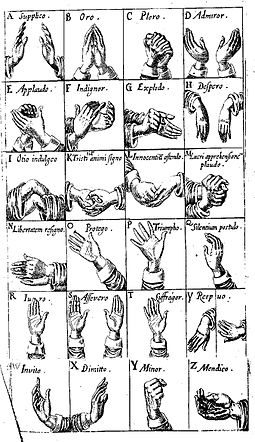

History of Sign Language
Groups of deaf people have used sign languages throughout history. One of the earliest written records of a sign language is from the fifth century BC, in Plato's Cratylus, where Socrates says: "If we hadn't a voice or a tongue, and wanted to express things to one another, wouldn't we try to make signs by moving our hands, head, and the rest of our body, just as dumb people do at present?" Until the 19th century, most of what is known about historical sign languages is limited to the manual alphabets (fingerspelling systems) that were invented to facilitate the transfer of words from a spoken language to a sign language, rather than documentation of the language itself. Debate around the monastic sign-language developed in the Middle Ages has come to regard it as a gestural system rather than a true sign language.
The earliest records of contact between Europeans and Indigenous peoples of the Gulf Coast region in what is now Texas and northern Mexico note a fully formed sign language already in use by the time of the Europeans' arrival there. These records include the accounts of Cabeza de Vaca in 1527 and Coronado in 1541. Spanish monk Pedro Ponce de León (1520–1584) developed the first manual alphabet. This alphabet was based, in whole or in part, on the simple hand gestures used by monks living in silence.
In 1620, Juan Pablo Bonet published Reducción de las letras y arte para enseñar a hablar a los mudos ('Reduction of letters and art for teaching mute people to speak') in Madrid. It is considered the first modern treatise of sign language phonetics, setting out a method of oral education for deaf people and a manual alphabet.
In Britain, manual alphabets were also in use for a number of purposes, such as secret communication, public speaking, or communication by or with deaf people. In 1648, John Bulwer described "Master Babington", a deaf man proficient in the use of a manual alphabet, "contryved on the joynts of his fingers", whose wife could converse with him easily, even in the dark through the use of tactile signing.
In 1680, George Dalgarno published Didascalocophus, or, The deaf and dumb mans tutor, in which he presented his own method of deaf education, including an "arthrological" alphabet, where letters are indicated by pointing to different joints of the fingers and palm of the left hand. Arthrological systems had been in use by hearing people for some time; some have speculated that they can be traced to early Ogham manual alphabets.
The vowels of this alphabet have survived in the modern alphabets used in British Sign Language, Auslan and New Zealand Sign Language. The earliest known printed pictures of consonants of the modern two-handed alphabet appeared in 1698 with Digiti Lingua (Latin for Language [or Tongue] of the Finger), a pamphlet by an anonymous author who was himself unable to speak. He suggested that the manual alphabet could also be used by mutes, for silence and secrecy, or purely for entertainment. Nine of its letters can be traced to earlier alphabets, and 17 letters of the modern two-handed alphabet can be found among the two sets of 26 handshapes depicted.
Charles de La Fin published a book in 1692 describing an alphabetic system where pointing to a body part represented the first letter of the part (e.g. Brow=B), and vowels were located on the fingertips as with the other British systems. He described such codes for both English and Latin. By 1720, the British manual alphabet had found more or less its present form. Descendants of this alphabet have been used by deaf communities (or at least in classrooms) in the former British colonies India, Australia, New Zealand, Uganda and South Africa, as well as the republics and provinces of the former Yugoslavia, Grand Cayman Island in the Caribbean, Indonesia, Norway, Germany and the United States. During the Polygar Wars against the British, Veeran Sundaralingam communicated with Veerapandiya Kattabomman's mute younger brother, Oomaithurai, by using their own sign language.
Frenchman Charles-Michel de l'Épée published his manual alphabet in the 18th century, which has survived largely unchanged in France and North America until the present time. In 1755, Abbé de l'Épée founded the first school for deaf children in Paris; Laurent Clerc was arguably its most famous graduate. Clerc went to the United States with Thomas Hopkins Gallaudet to found the American School for the Deaf in Hartford, Connecticut, in 1817. Gallaudet's son, Edward Miner Gallaudet, founded a school for the deaf in 1857 in Washington, D.C., which in 1864 became the National Deaf-Mute College. Now called Gallaudet University, it is still the only liberal arts university for deaf people in the world.
Sign languages generally do not have any linguistic relation to the spoken languages of the lands in which they arise. The correlation between sign and spoken languages is complex and varies depending on the country more than the spoken language. For example, although Australia, English Canada, New Zealand, the U.K. and the U.S. all have English as their dominant language, American Sign Language (ASL), derived from French Sign Language, is the main sign language used in the U.S. and English Canada, whereas the other three countries use varieties of British, Australian and New Zealand Sign Language, unrelated to ASL. Similarly, the sign languages of Spain and Mexico are very different, despite Spanish being the national language in each country, and the sign language used in Bolivia is based on ASL rather than any sign language that is used in any other Spanish-speaking country. Variations also arise within a 'national' sign language which do not necessarily correspond to dialect differences in the national spoken language; rather, they can usually be correlated to the geographic location of residential schools for the deaf.
International Sign, formerly known as Gestuno, is used mainly at international deaf events such as the Deaflympics and meetings of the World Federation of the Deaf. While recent studies claim that International Sign is a kind of a pidgin, they conclude that it is more complex than a typical pidgin and indeed is more like a full sign language. While the more commonly used term is International Sign, it is sometimes referred to as Gestuno, International Sign Pidgin or International Gesture (IG). International Sign is a term used by the World Federation of the Deaf and other international organisations.